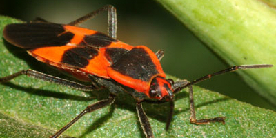
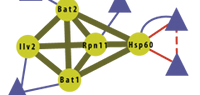
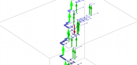

home
people and institutions
projects and publications
events
working with us
gender equality
Research News (since 2012)

May 2015:
New paper on self-organized body patterning in a basal insect appeared in eLife
December 2014:
New paper on the inference of transcriptional regulation appeared in Molecular Systems Biology
December 2014:
New paper on speciation mechanisms in plants appeared in PLoS Genetics
September 2014:
New paper on the transitory advantage of sex appeared in PLoS Computational Biology
June 2014:
New paper on the evolution of proteins and their functions appeared in PloS Computational Biology
June 2014:
Review paper on empirical fitness landscapes appeared in Nature Reviews Genetics
April 2014:
New paper on the evolution of chromatin insulators appeared in Trends in Genetics
February 2014:
New paper on predicting the evolution of the human flu appeared in Nature
February 2014:
New paper on the evolution of leaf shape appeared in Science
January 2014:
New paper on the dynamics of gene expression appeared in Molecular Systems Biology
October 2013:
New paper on the genomics of human lung cancers appeared in Science Transl. Medicine.
October 2013:
New paper on the genetic basis of host-pathogen interactions appeared in eLife.
October 2013:
New paper on the use of sex in adaptive evolution appeared as Highlight in Genetics.
September 2013:
New paper on adaptation in wild and domesticated plants appeared in PNAS.
June 2013:
New paper on the evolution of photosynthesis in plants appeared in Cell.
June 2013:
New paper on nucleosome positioning appeared in PNAS.
March 2013:
New paper on gene transfer between domains of life appeared in Science.

February 2013:
New paper on the adaptation of molecular pathways in yeast appeared in Nature.
January 2013:
New paper on the predictability of evolution appeared in PNAS.
December 2012:
New paper on the genetic basis of flowering modes appeared in PLoS Genetics.
October 2012:
New paper on evolutionary kernels of multicellular animals appeared in PNAS.

October 2012:
New paper on the evolution of the human flu virus appeared in Genetics.
July 2012:
New paper on host-pathogen co-evolution appeared in PLoS Biology.
June 2012:
New paper on the evolution of antibiotic resistance appeared in PLoS Genetics.